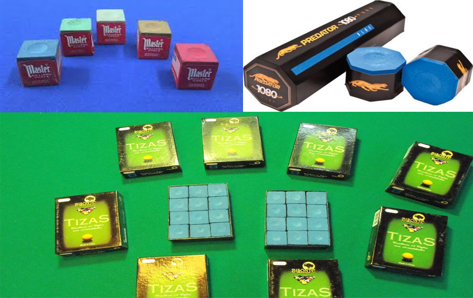
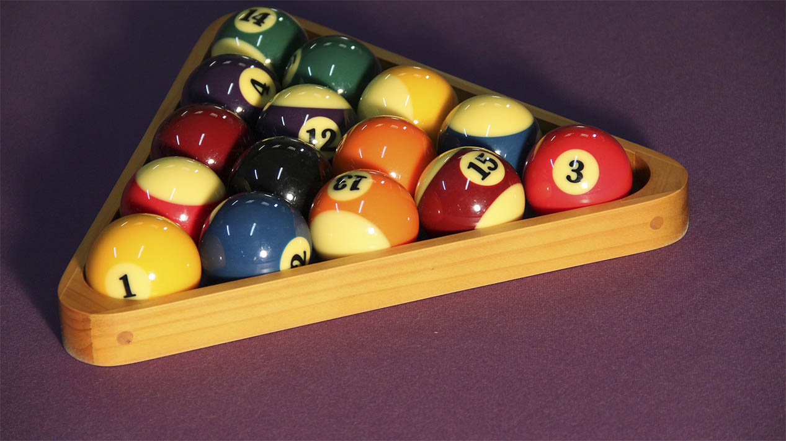
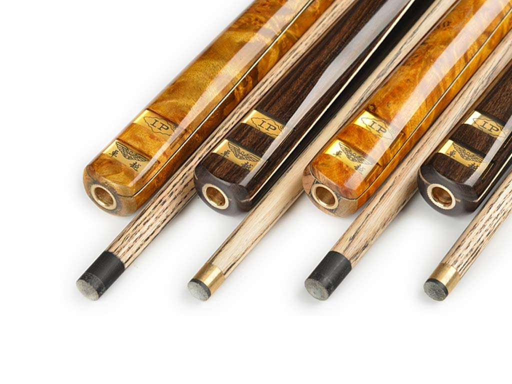
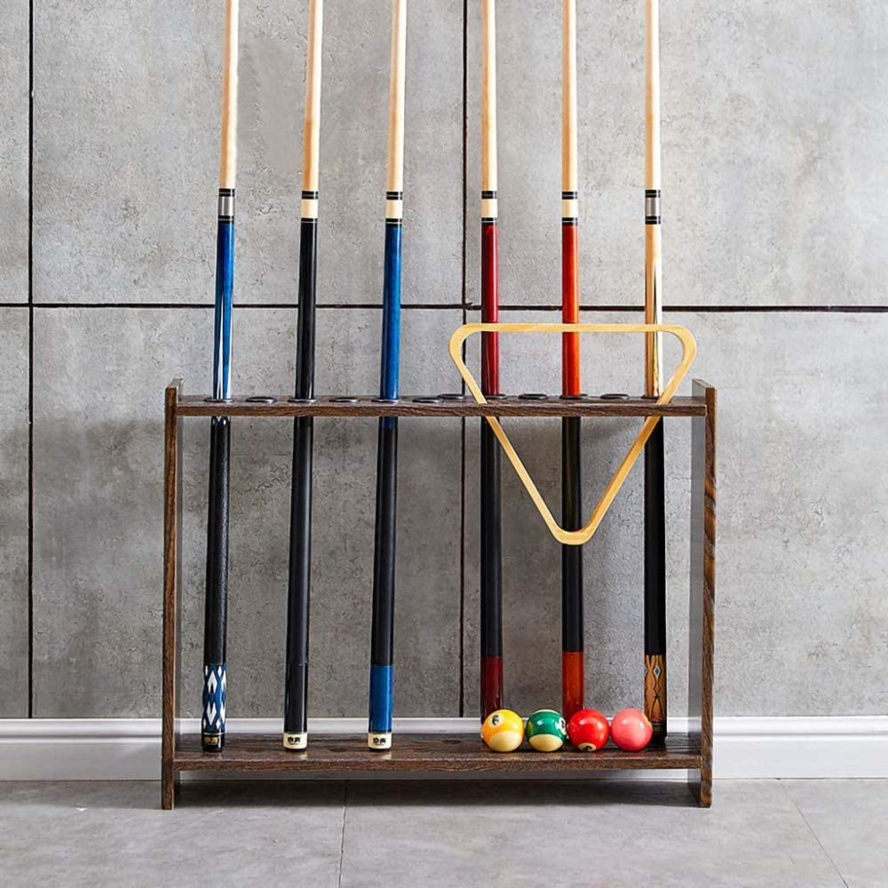
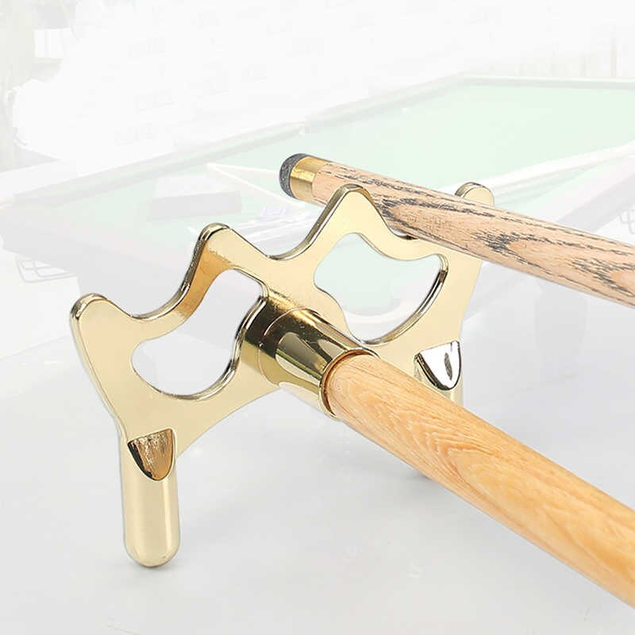

-

Accesorio: Tizas Marca "LOBO" Y "MASTER" Kitz Completos
Costo: $300 Pesos Mexicanos C/U. -

Accesorio: Bolas De Billar Tipo Clasicas
Costo: $600 Pesos Mexicanos. -

Accesorio: Set de Tacos de Billar Marca "IP"
Costo: $500 Pesos Mexicanos C/U. -

Accesorio: Soporte Para Tacos de Billar
Costo: $450 Pesos Mexicanos. -

Accesorio: Burra para Taco de Billar
Costo: $200 Pesos Mexicanos.